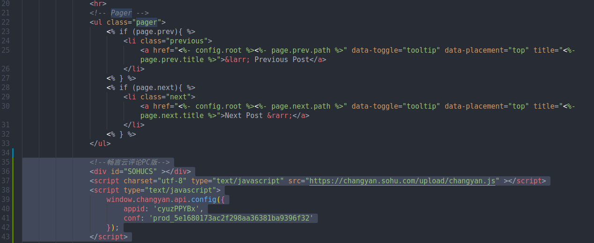
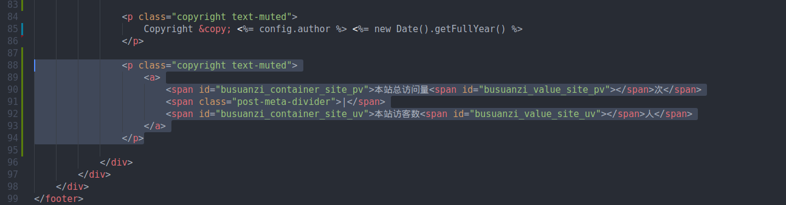
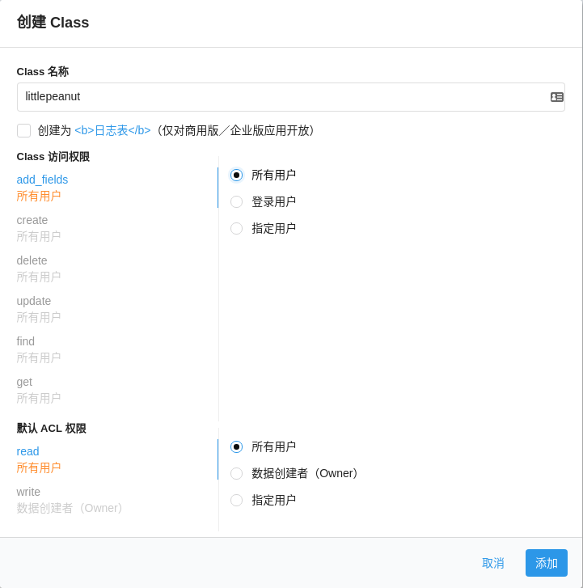

添加畅言云评论
通过畅言云评论可以实现评论等功能，首先须在畅言官网进行注册，进入云评论-安装云评论-通用代码安装中将配置代码复制添加到\themes\beantech\layout\post.ej中，具体位置如下图所示。

添加访问统计
利用不蒜子的pv模式获取网站总访问量，利用uv模式获取访客人数，修改\themes\beantech\layout_partial\footer.ejs文件，首先在最后添加script如下：
1
| <script async src="//busuanzi.ibruce.info/busuanzi/2.3/busuanzi.pure.mini.js"></script>
|
然后在html中添加代码：
1
2
3
4
5
6
7
| <p class="copyright text-muted">
<a>
<span id="busuanzi_container_site_pv">本站总访问量<span id="busuanzi_value_site_pv"></span>次</span>
<span class="post-meta-divider">|</span>
<span id="busuanzi_container_site_uv">本站访客数<span id="busuanzi_value_site_uv"></span>人</span>
</a>
</p>
|
添加位置如图所示：

添加留言板
将云评论独立，设置为留言板功能。
首先在主题下添加一个留言板BBS界面，在/themes/beantech/layout中新建bbs.ejs,文件内容如下：
1
2
3
4
5
6
7
8
9
10
11
12
13
| ---
layout: page
---
<style type="text/css">
header.intro-header {
background-position: right;
}
</style>
<div class="zh post-container">
<%- page.content %>
</div>
|
然后在根目录的/source中新建/bbs文件夹，新建index.md文件，类似于about页面，使用markdown设置页面内容，index.md内容如下所示：
1
2
3
4
5
6
7
8
| ---
layout: "bbs"
title: "BBS"
date: 2019-12-10 19:11:35
description: "free talk to me"
header-img: "img/header_img/home-bg-2-dark.png"
comments: true
---
|
百度链接提交
链接提交工具是网站主动向百度搜索推送数据的工具，本工具可缩短爬虫发现网站链接时间，网站时效性内容建议使用链接提交工具，实时向搜索推送数据。
安装插件
1
| $ npm install hexo-baidu-url-submit --save
|
确保配置文件_config.yml中url与百度站点管理注册域名相同，并添加：
1
2
3
4
5
| baidu_url_submit:
count: 1
host: littlepeanut.top
token: your_token
path: baidu_urls.txt
|
同时在配置文件中的deployer中添加百度提交：
1
2
3
4
5
6
7
8
| deploy:
- type: git
repo: git@github.com:feiwww/littlepeanut.github.io.git
branch: master
- type: git
repository: git@e.coding.net:wangfeiabn/wangfeiabn.git
branch: master
- type: baidu_url_submitter # 添加该行
|
如上配置了github、coding和百度链接提交三种部署方式，使用hexo d部署时在github、coding上传代码的同时，会将链接主动提交到百度。
使用Google Analytics
- 登录注册Google Analytics,填写域名生成跟踪ID
- 由于beantech主题已经实现了该功能，直接将跟踪ID填写在站点配置文件中_config.yml即可。
valine评论
使用轻量化的valine评论系统
首先注册登录leancloud，创建新应用，进入储存中创建class，设置所有用户可读，数据创建者可写，如下图。

在设置-应用Keys中找到appID和appKey。
在主题下的配置文件~/themes/beantech/_config.yml添加，注意填入你自己的appID和appKey：
1
2
3
4
5
6
7
8
9
10
| valine:
enable: true
appid: your appid
appkey: your appkey
notify: false
verify: false
placeholder: 说点什么吧...
avatar:
guest_info: nick,mail,link
pageSize: 10
|
将下面代码添加到post.ejs和bbs.ejs中，具体位置如上述添加畅言云评论和添加留言板。
1
2
3
4
5
6
7
8
9
10
11
12
13
14
15
16
17
18
19
20
21
|
<div class="valine_comment"></div>
<script src="//cdn1.lncld.net/static/js/3.0.4/av-min.js"></script>
<script src="//unpkg.com/valine/dist/Valine.min.js"></script>
<script>
var notify = '<%= theme.valine.notify %>' == true ? true : false;
var verify = '<%= theme.valine.verify %>' == true ? true : false;
new Valine({
av: AV,
el: '.valine_comment',
emoticon_url: 'https://cloud.panjunwen.com/alu',
emoticon_list: ["狂汗.png", "不说话.png", "汗.png", "坐等.png", "献花.png", "不高兴.png", "中刀.png", "害羞.png", "皱眉.png", "小眼睛.png", "暗地观察.png"],
app_id: '<%= theme.valine.appid %>',
app_key: '<%= theme.valine.appkey %>',
placeholder: '<%= theme.valine.placeholder %>'
});
</script> -->
|
Ref. 韦阳的博客, 遇见西门
-->